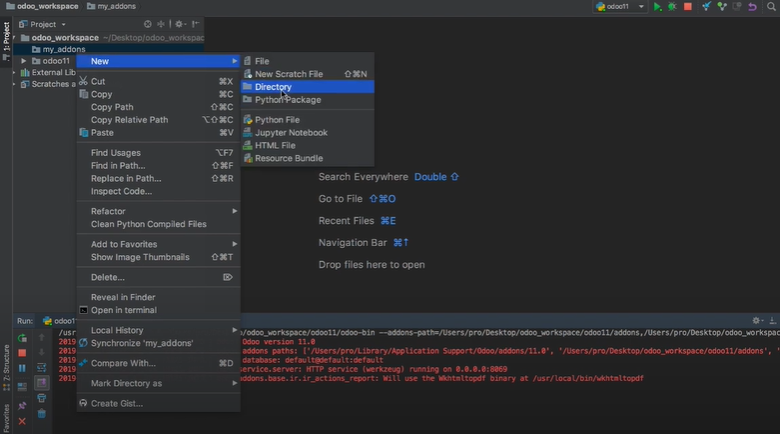
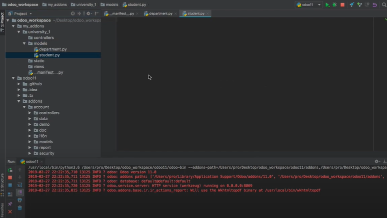
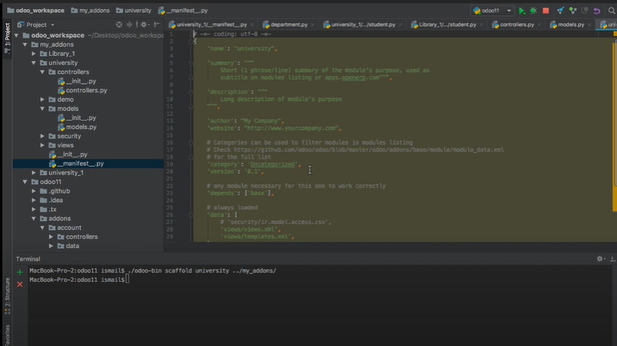
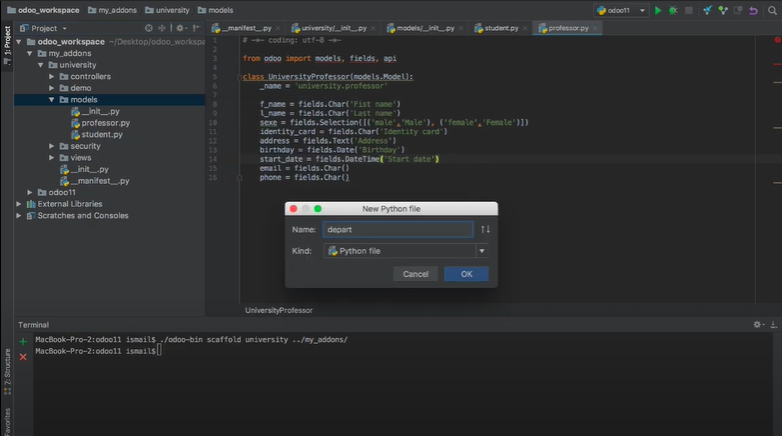

<!DOCTYPE html>
<html lang="en">

<head>
    <meta charset="UTF-8">
    <meta http-equiv="X-UA-Compatible" content="IE=edge">
    <meta name="viewport" content="width=device-width, initial-scale=1.0">
    <title>Le développement avec Odoo
    </title>
    <link rel="stylesheet" href="css/bootstrap.min.css">
    <link rel="stylesheet" href="fontawesome/css/all.css">
    <link rel="stylesheet" href="css/animate.min.css">
    <link rel="stylesheet" href="css/style.css">
</head>

<body>

    <nav class="navbar navbar-expand-lg navbar-dark ">
        <div class="container">
            <a class="navbar-brand" href="index.html">
                EL FOULADH
            </a>
            <button class="navbar-toggler" type="button" data-toggle="collapse" data-target="#navbarSupportedContent"
                aria-controls="navbarSupportedContent" aria-expanded="false" aria-label="Toggle navigation">
                <span class="navbar-toggler-icon"></span>
            </button>

            <div class="collapse navbar-collapse" id="navbarSupportedContent">
                <ul class="navbar-nav mr-auto">
                    <li class="nav-item">
                        <a class="nav-link" href="index.html">Acceuil</a>
                    </li>
                    <li class="nav-item">
                        <a class="nav-link" href="plan.html">Plan</a>
                    </li>
                    <li class="nav-item">
                        <a class="nav-link" href="introduction_generale.html">Introduction</a>
                    </li>
                    <li class="nav-item">
                        <a class="nav-link" href="etude_de_l_organisme.html">Etude de l’organisme</a>
                    </li>
                    <li class="nav-item dropdown active">
                        <a class="nav-link dropdown-toggle" href="#" id="navbarDropdown" role="button"
                            data-toggle="dropdown" aria-haspopup="true" aria-expanded="false">
                            Activités de stage
                        </a>
                        <div class="dropdown-menu" aria-labelledby="navbarDropdown">
                            <a class="dropdown-item" href="activites_de_stage1.html">Installation environnement de
                                travail et intégration dans l’équipe</a>
                            <div class="dropdown-divider"></div>
                            <a class="dropdown-item" href="activites_de_stage2.html">Installation Le progiciel Odoo et Pycharm
                            </a>
                            <div class="dropdown-divider"></div>
                            <a class="dropdown-item" href="activites_de_stage3.html">Configuration le progiciel Odoo et Pycharm
                            </a>
                            <div class="dropdown-divider"></div>
                            <a class="dropdown-item" href="activites_de_stage4.html">Le développement avec Odoo
                            </a>
                            <div class="dropdown-divider"></div>
                            <a class="dropdown-item" href="activites_de_stage5.html">Les types des Architecture Odoo
                             </a>
                        </div>
                    </li>
                    <li class="nav-item">
                        <a class="nav-link" href="infrastructure_informatique.html">Infrastructure informatique</a>
                    </li>
                    <li class="nav-item">
                        <a class="nav-link" href="conclusion_generale.html">Conclusion</a>
                    </li>
                </ul>
            </div>
        </div>
    </nav>

    <div class="container">
        <div class="card shadow-lg">
            <div class="card-header bg-primary text-white">
                4<sup>eme</sup> activite : Les types des Architecture Odoo
            </div>
            <div class="card-body">

                <div class="alert alert-info"> <i class="fas fa-info-circle"></i> Apres terminer la partie de développer les modules
                 en utiliser une structure modulaire, et indépendante qui permet à la fois d’améliorer régulièrement les modules existants   </div>

                <br>

                <center>
                    
                </center>
                <h3 class="my-4 text-underline">Définitions : </h3>

                <p><strong> L’architecture technique Odoo</strong> :  est construite autour de trois composants principaux 
                    le serveur odoo-server qui stocke ses données dans une base PostgreSQL.
                    le client odoo (odoo-client) qui s'installe sur le terminal.
                    le serveur odoo-web qui permet une utilisation depuis un navigateur.
                    </p>

                

                <h3 class="my-4 text-underline">Les 3 types des Architecture Odoo : </h3>

                <table class="table">
                    <thead class="thead-dark">
                        <tr>
                            <th scope="col">Type</th>
                            <th scope="col">Description</th>
                        </tr>
                    </thead>
                    <tbody>
                        <tr>
                            <th scope="row"> Architecture MVC</th>
                            <td> MVC est un modèle de conception qui décrit une architecture d’application informatique en la 
                                décomposant en 3 parties : modèle, vue et contrôleur. 
                               
                            </td>
                        </tr>
                        <tr>
                            <th scope="row">Architecture technique</th>
                            <td> Serveur d’applications développées en langage Python ; la couche de mapping, objetrelationnel lui permet d’accéder au serveur de base de données.
                                Serveur web appelé par le navigateur web de l’utilisateur qui communique avec le serveur 
                                d’applications via le protocole XML-RPC.
                                
                            </td>
                        </tr>
                        <tr>
                            <th scope="row"> Architecture d’un module</th>
                            <td>

                                L’architecture modulaire d’Odoo lui permet de s’adapter à l’évolution des besoins dans le temps
                            </td>
                        </tr>
                    
                    </tbody>
                </table>


                <h3 class="my-4 text-underline">Un module Odoo 
                    : </h3>

               
                <p>Les étapes suivi pour caractériser un module : </p>

                <ul class="list-unstyled">
                    <li class="mb-3">
                        1. Les vues, sous forme de fichiers XML. Ces vues sont sous forme de formulaires, listes, 
                        graphes, calendriers, ou de diagrammes. 
                        <strong>XML</strong>

                        <center>
                            <figure>
                                
                            </figure>
                        </center>
                    </li>
                    <li class="mb-3">
                        2. Les objets, sous forme de code python pour la plupart, contiennent les business objects et se 
                        chargent des traitements effectués par le module. 

                        <center>
                            <figure>
                                
                            </figure>
                        </center>
                    </li>
                    <li class="mb-3">
                        3. Les workflows, sont des fichiers XML, permettant de modéliser les flux d'un état à l'autre.
                        (Par exemple : passage d'un contrat de l'état en cours à l'état terminé, etc.)
                    
                    <center>
                        <figure>
                            
                        </figure>
                    </center>
                    </li>
                    <li class="mb-3">
                        4. Les rapports sont composés de fichiers XML pour la partie statique, de code python pour la 
                        partie dynamique et la mise en page se fait à l'aide d'OpenOffice. 
                        Pour finir le module a un fichier nécessaire : __openerp__.py qui définit les dépendances du 
                        module. 

                        <center>
                            <figure>
                                
                            </figure>
                        </center>
                    </li>
                </ul>


                <hr>
                <p> Dans cette partie , J’ai eu l’opportunité d’:</p>
                <ul class="list-unstyled">
                    <li class="mb-3"><i class="fas fa-arrow-circle-right text-success"></i>
                        Avoir une idéee sur les diffèrents types des  L’architecture modulaire d’Odoo 
                    </li>
                </ul>
                <center>
                    <a class="btn btn-primary" href="infrastructure_informatique.html"><i
                            class="fas fa-arrow-circle-right"></i>
                        chapitre suivant : Infrastructure Informatique</a>
                </center>
            </div>
        </div>
    </div>

    <script src="js/jquery-3.5.1.slim.min.js"></script>
    <script src="js/bootstrap.bundle.min.js"></script>
</body>

</html>